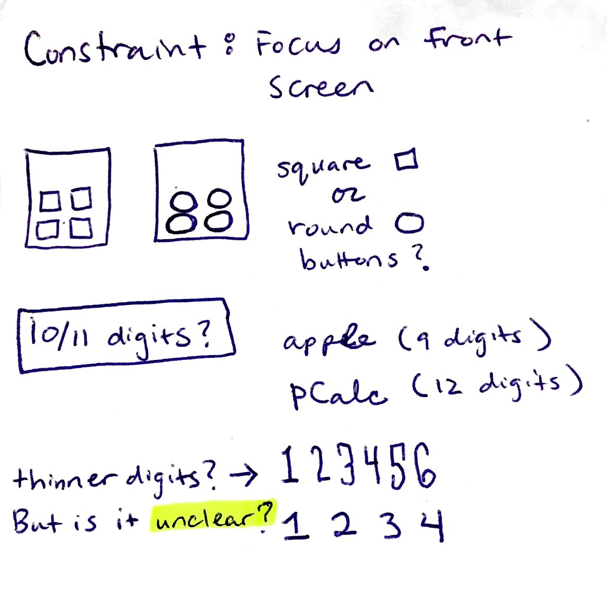
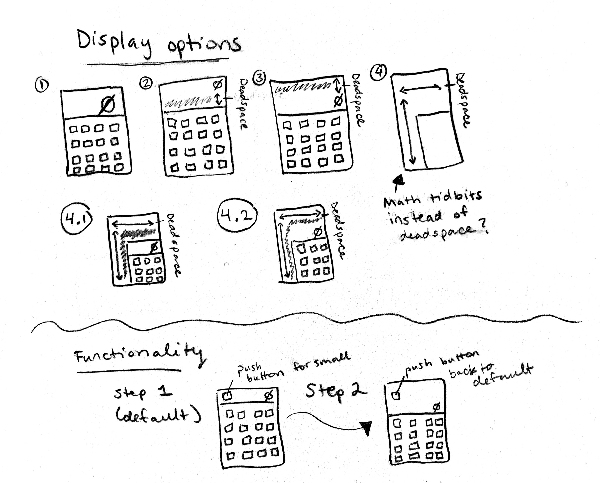
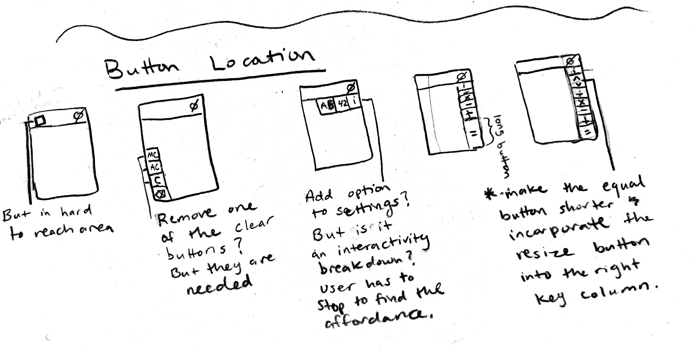
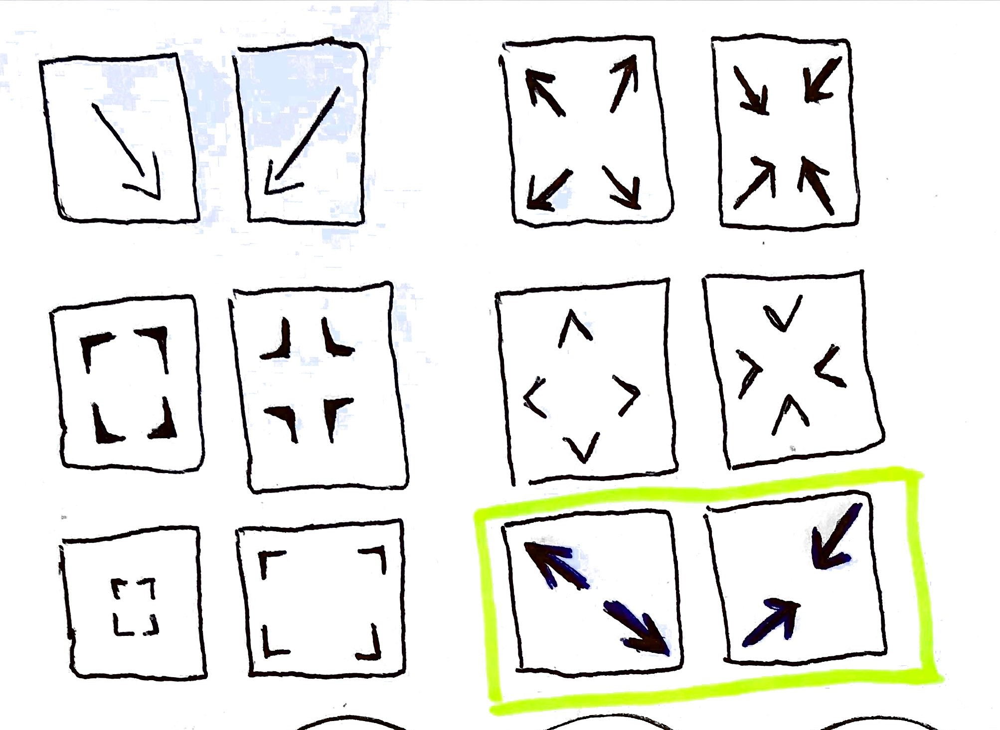
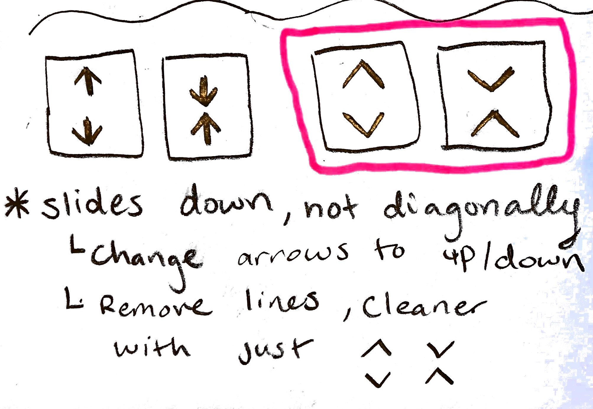
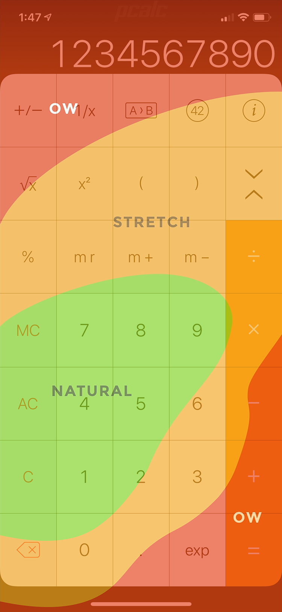
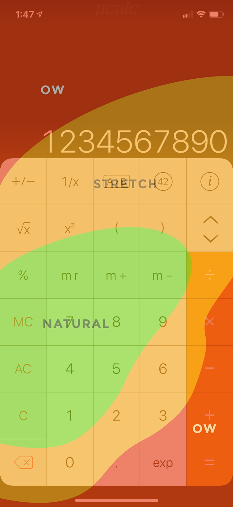
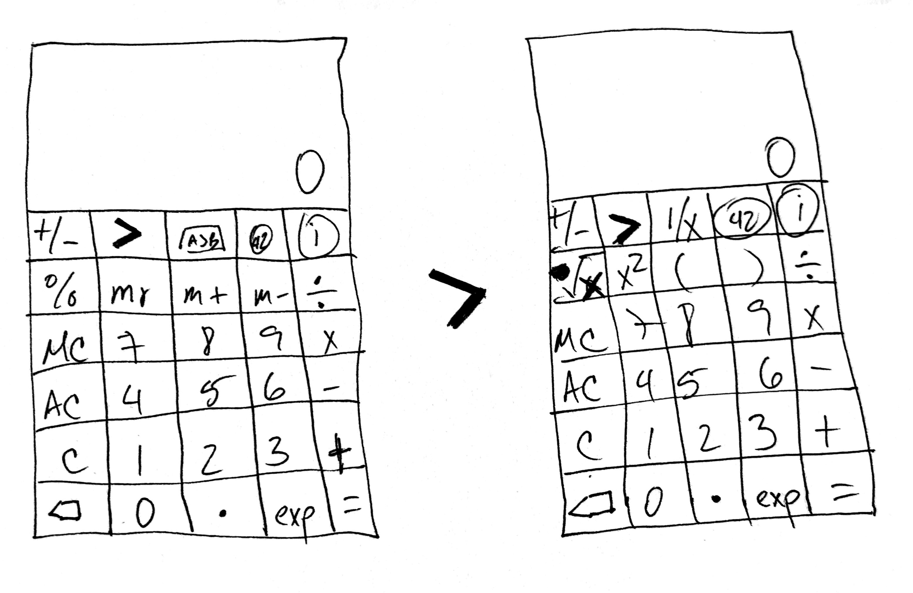
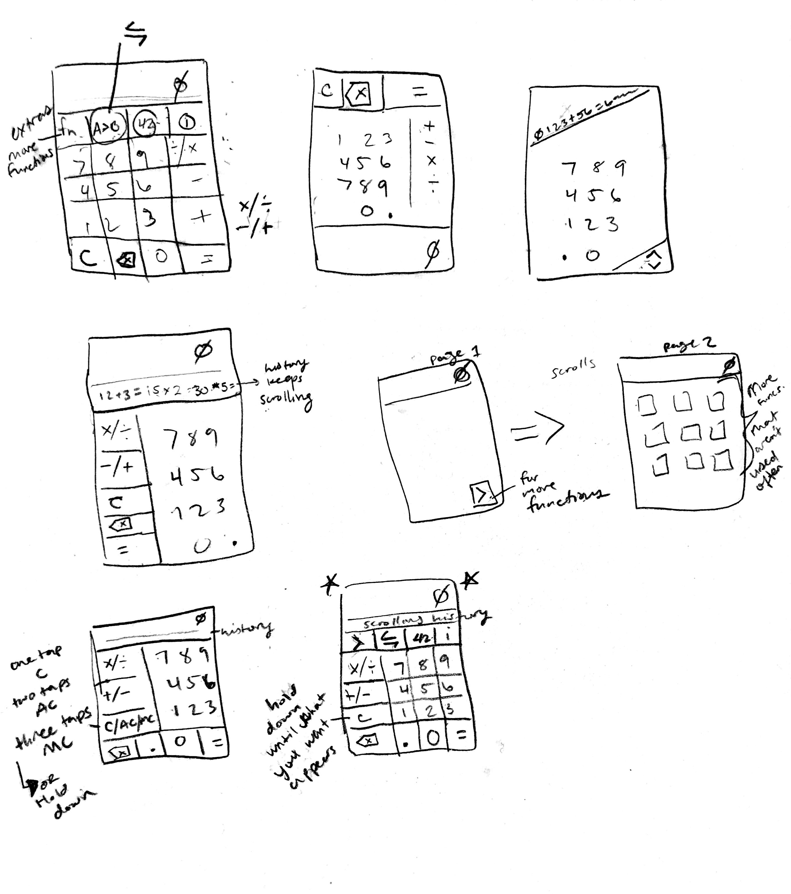
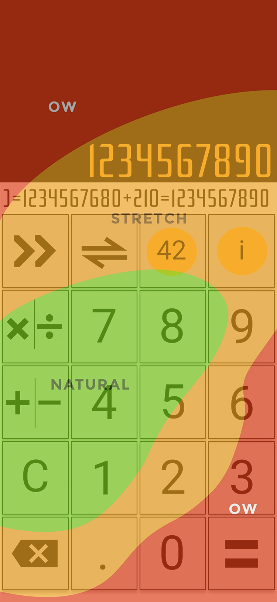

Analysis
We chose the PCalc Lite app running on an iPhone X to redesign for one-handed use. The app is difficult to interact with when using one hand, due to the
size and layout of the screen and buttons.
Scott Hurff’s heat map of thumb zones superimposed
over the phone images, depict how difficult it is to reach the function keys towards the top of the screen. They
are in what Hurff describes as the “ow” zone.
The iPhone X does have a “reachability” feature. However,
its affordance is hidden and hard to access during one-handed use. When accessing this reachability feature, the
user may have to attempt 2-3 times before it gets initiated due to the area of interactivity being small and very
close to the bottom edge of the phone. Once the top of the display is lowered, the user needs to push it back up
in order to resume using (the functionality of) the calculator.
Sketching
Issue: Tall buttons that fill up the entire screen make it harder to reach the buttons towards the top.
Possible Solution: Change the shape of the buttons from tall rectangles to square or circle buttons.

Issue: Apple’s reachability feature isn’t obvious (hidden affordance) and hard to activate, even when the user knows how to do so.
Possible Solution: Our first redesign concept (two screenshots below) shrunk the rectangular buttons down to squares and added a visible
button to activate resizing. The button was within the stretching zone (reachable) and didn’t replace any existing
buttons, thus preserving the calculator’s functionality.
Our second design acknowledges there’s no need for a resizing
button if the calculator’s buttons are located within Hurff’s natural and stretching zones as default, allowing the
user to use the app comfortably with one hand.






Issue: Too many buttons on the display
Possible Solution: Instead
of having many buttons displayed at once, add a button that will allow the user to access more advanced functions.
Once a function is chosen, the user should be taken back to the default screen automatically so (s)he doesn’t have
to take the extra step of pushing another button to get back to the calculation.




Re-design
We created a calculator app that addresses the issues we found in the original PCalc Lite design.
With our first redesign we constrained ourselves to stay as close to the original design as possible.
This is because it provided the user many affordances and already followed Apple's design guidelines.
However, with our second design, we diverged further from the first redesign concept.
Apple Design Guidelines
We reshaped the buttons into squares so they don’t fill the screen and placed the majority of the keys in Hurff’s “ow”-free zone,
which eliminated the need for a “reachability” feature. We decided to place the most common calculator functions on the default screen,
providing the user with a button that allows them to access more complex function keys if needed.
Once the user has selected the function key in the second screen, they are automatically sent back to the first page to access the numbers.
Not having to push a button to go back to the default screen provides the user an uninterrupted experience.
There is a scrolling log of the user's calculations under the display panel so s(he) will be able to review their previous calculations.
